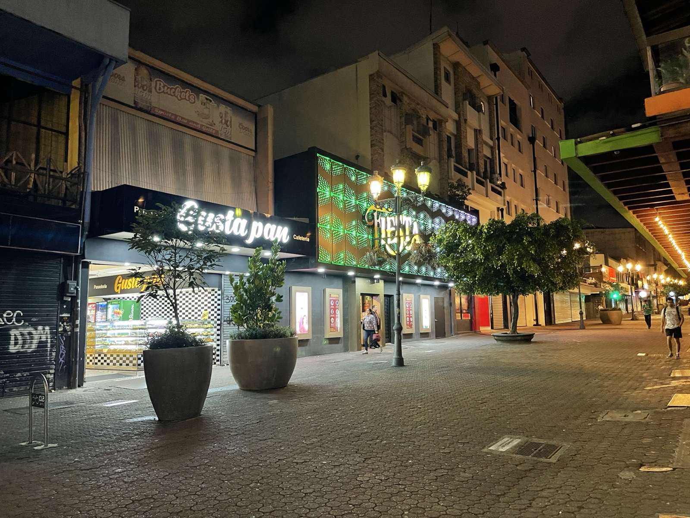
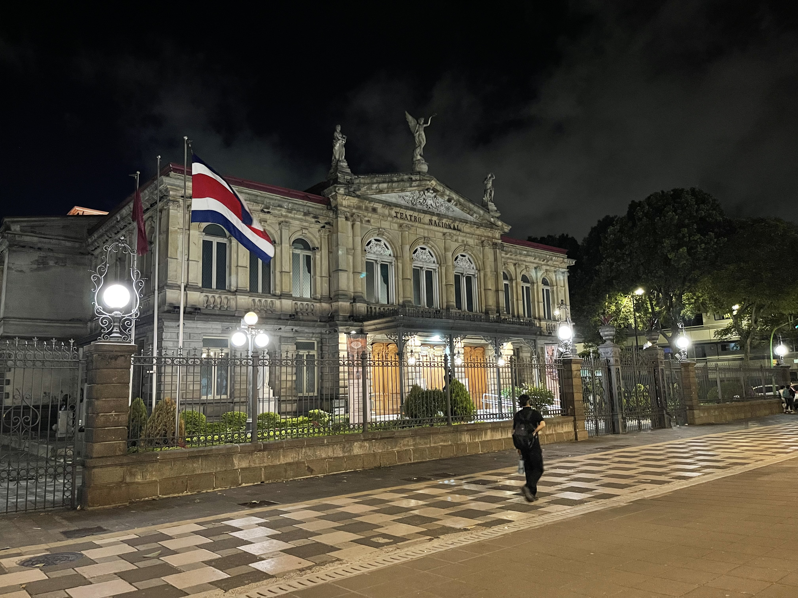
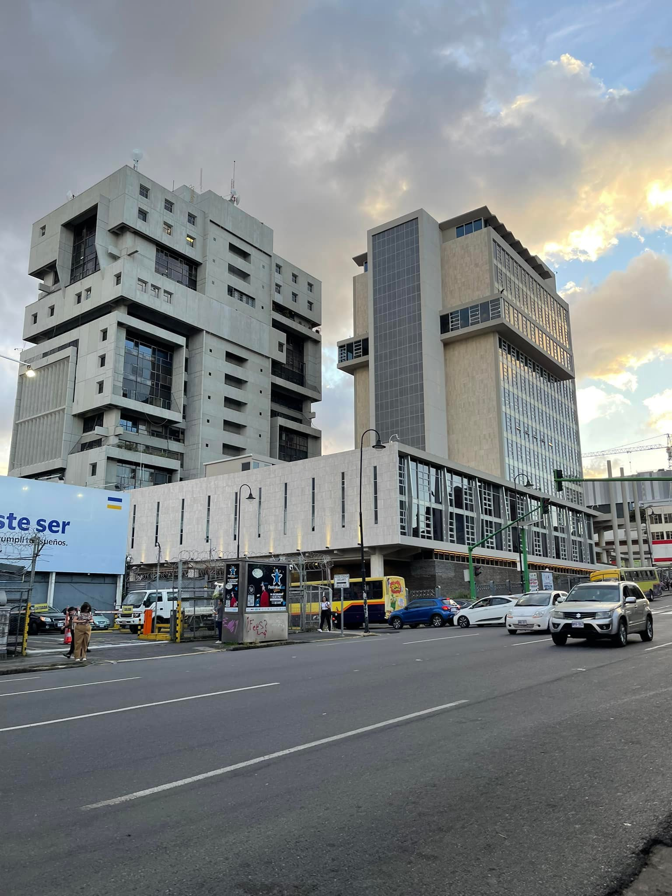
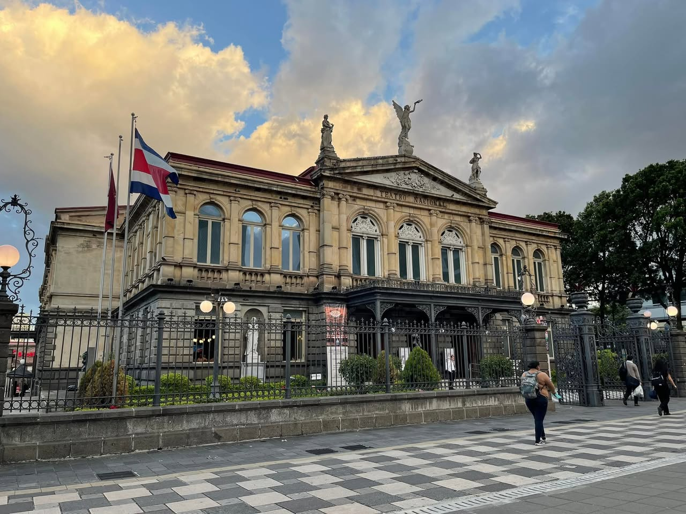
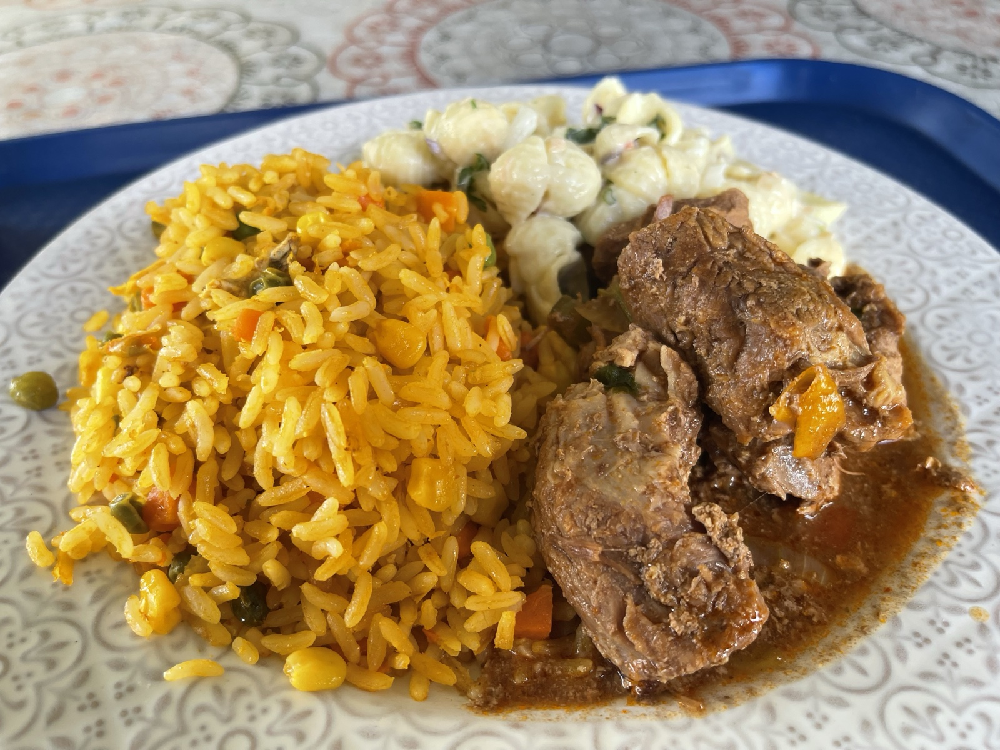
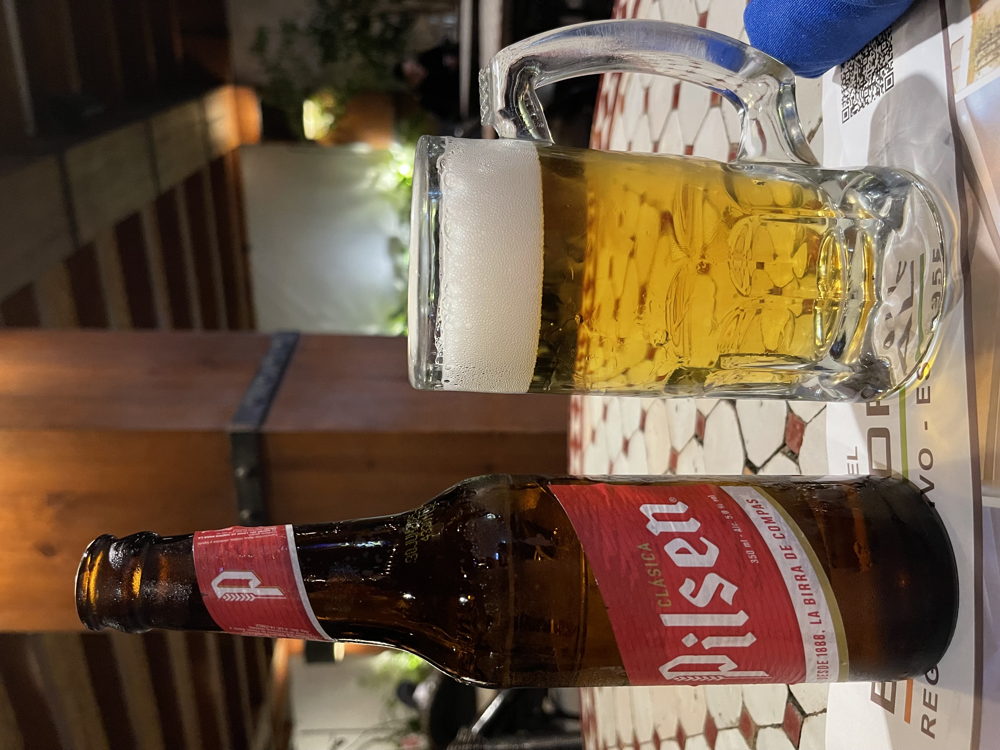
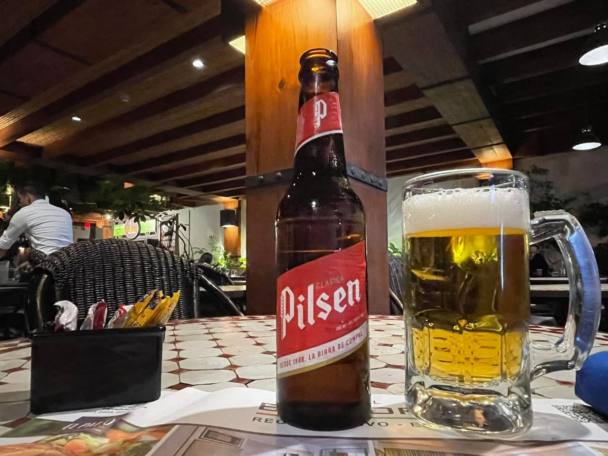
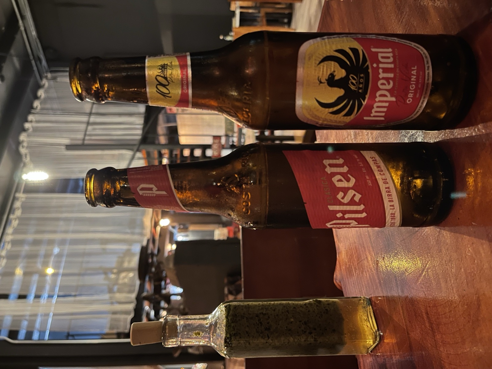
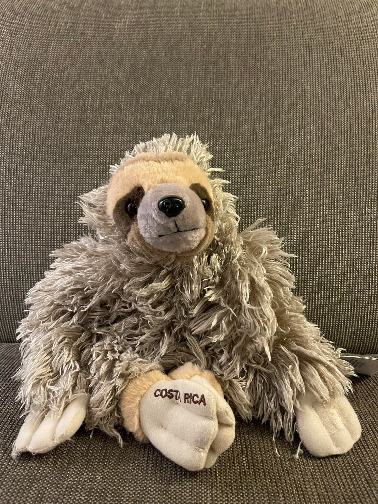

2025年1月、コスタリカへ戻った。最後に来たのは2015年、JICA隊員として活動していた頃だ。今回は旅行者として、ただ見て回るために来た。
サンホセの夜
夜のサンホセの中心部を歩いた。2013〜2015年によく通っていた通りを歩くと、変わったところと変わっていないところが交互に現れる。新しいカフェが入ったビル、昔のままの建物、整備された歩道。

サンホセの中心にあるテアトロ・ナシオナル（国立劇場）は変わっていなかった。コスタリカのコーヒー豊作を祝って1897年に建てられた劇場で、夜は照明が当たってライトアップされる。コスタリカの国旗と一緒に夜景の中に立っていた。

サンホセの変化
昼間のサンホセを歩くと、10年間の変化がよくわかる。高いビルが増えていた。道路が整備されていた。街全体が少しきれいになっていた。


サンビートには行けなかった
コスタリカ南部の町サンビート（San Vito）には、2013〜2015年に住んでいた場所がある。今回の滞在では時間が足りず、行けなかった。
仕方ない、とは思う。でも通り過ぎるだけになったことが少し引っかかった。次に来るときは時間を作って行こうと思った。
ごはんはやっぱりうまかった
昼に入った食堂で、黄色いご飯と肉の煮込みが出てきた。コスタリカのカサードに近い定食で、懐かしい味がした。米とビーンズの組み合わせは中米のどこでも食べられるが、コスタリカのものはやっぱりどこか違う気がする。

ピルセンとインペリアルは変わらなかった
夜、レストランでピルセン・クラシカ（Pilsen Clásica）を飲んだ。1888年から続くコスタリカのビールで、隊員時代によく飲んでいた。グラスに注ぐと白い泡が立つ。一口飲むと、記憶がよみがえってくる。

別の日に、インペリアル（Imperial）も飲んだ。コスタリカのもうひとつの定番ビールで、イーグルのロゴが印象的だ。100周年記念ラベルのボトルが出ていた。ピルセンとインペリアル、2本並べると「コスタリカに来た」という実感が出る。



10年前に住んでいた国に旅行者として戻るのは、不思議な感覚だ。同じ場所なのに、自分との関係が変わっている。見えるものが違う。次はサンビートまで行きたい。